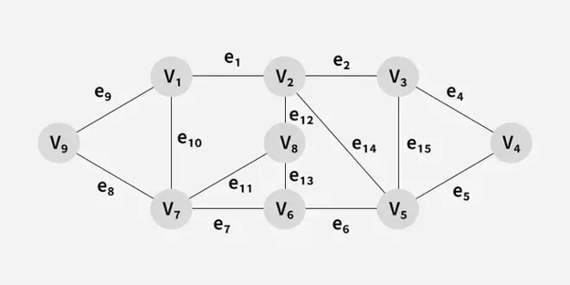
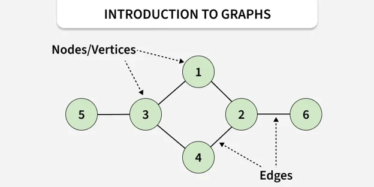
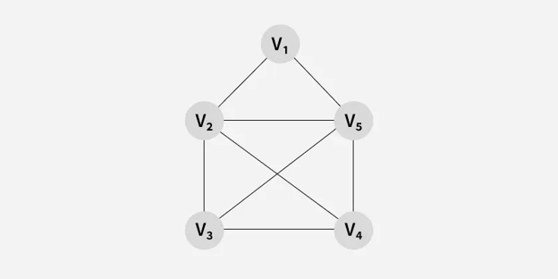
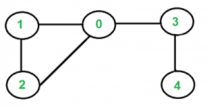
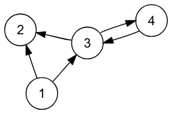
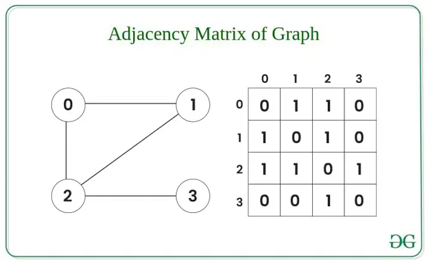
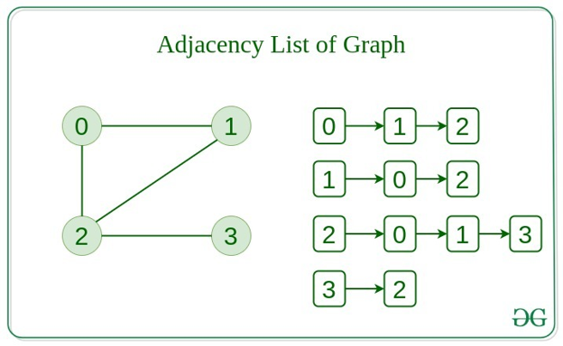

Weighted Graph
A graph where each edge has a number (weight) that represents distance, cost, or time.

NON-LINEAR DATA STRUCTURE
Learn how graphs connect vertices with edges to model relationships, how they can be represented in memory, and how traversal algorithms like BFS and DFS explore them.
A graph is a non-linear data structure made up of vertices (nodes) and edges (connections) that represent relationships between objects. Unlike arrays or linked lists, graphs do not follow a sequential order.
Example: on a map, each city is a vertex, and each road connecting two cities is an edge. This way, a graph represents how cities are linked.

A graph can be divided into multiple categories based on different properties such as edges, direction, connectivity, and many others.
A graph where each edge has a number (weight) that represents distance, cost, or time.

A graph where all edges are treated equally, with no extra values like distance or cost.

A graph in which edges do not have any direction, meaning the nodes form an unordered pair in the definition of every edge.

A graph in which every edge has a direction, meaning the nodes form an ordered pair in the definition of every edge.

There are multiple ways to store a graph. The following are the most common representations.
The graph is stored as a 2D matrix where rows
and columns denote vertices. Each entry
represents whether an edge exists between those
vertices: matrix[i][j] = 1 if there
is an edge between vertex i and vertex j, and
matrix[i][j] = 0 if there is no
edge.

The graph is represented as a collection of array lists. An array of pointers points to the edges connected to each vertex.

A tree is a restricted type of graph data structure, just with some more rules. Every tree will always be a graph, but not all graphs will be trees.
INTERACTIVE LEARNING
Add and remove edges between vertices, then run a Breadth-First or Depth-First traversal from a chosen start vertex to see how each strategy explores the graph. The adjacency list below updates as you go.
Select an operation to interact with the graph.
Traversals start from the vertex selected in From.
ADJACENCY LIST